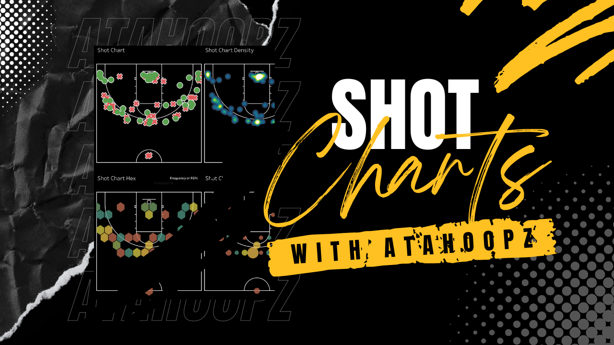

AtaHoopz Analytics
AtaHoopz Analytics - Basketball Analytics Dashboards
Ataviz Consulting is committed to revolutionizing basketball analytics through innovative, web-based dashboards. With AtaHoopz Analytics, we empower teams with cutting-edge insights, delivered with a commitment to accessibility—no subscription fees, mobile-friendly experiences, ensuring every team, regardless of size, can elevate their game and achieve unparalleled success.

Custom Heat Maps and Shot Charts:
Elevate your coaching prowess with player and team shot analytics, including both Shot Frequency Heat Maps and Shot Charts, within AtaHoopz Analytics Basketball Dashboards—your ultimate companion in the pursuit of basketball excellence. Our meticulously crafted shot charts provide a nuanced understanding of player performance, focusing on makes and misses, while shot frequency heat maps offer a comprehensive visual representation of shooting patterns and hot zones on the court. Dive deep into the intricacies of each player's shooting tendencies and team-wide dynamics to strategically optimize plays. With AtaHoopz Analytics, you'll not only refine offensive and defensive strategies but also gain a competitive edge by identifying strengths and areas for improvement. Transform the way you approach the game, turning every shot into a strategic data point for more informed decision-making on your journey to athletic triumph.

Custom Player Profiles:
AtaHoopz Analytics introduces Customizable Player Profiles designed to elevate both on-court performance and off-court engagement. In the dynamic realm of professional sports, fostering a connection between players and fans is paramount. AtaHoopz Analytics achieves this by offering comprehensive player profiles enriched with hometown maps, live social media feeds, and personalized details that delve beyond statistical achievements. This unique customization not only humanizes the players but also enhances their personal brand, creating a compelling narrative that resonates with fans. By showcasing the multifaceted aspects of each athlete, teams can foster a deeper connection with their audience, leading to increased fan engagement, brand loyalty, and amplified team marketing efforts. With AtaHoopz Analytics, go beyond the game statistics and empower your team to create a lasting impact in the hearts of fans.
Custom Player Strengths Ratings:
Step into a new era of strategic excellence with AtaHoopz Analytics and unlock the unparalleled benefits of our revolutionary Player Strength Ratings presented through a dynamic Radar Map. This distinctive feature, meticulously crafted for the discerning coach, offers a comprehensive view of each player's strengths across vital categories, including scoring versatility, efficiency, defensive prowess, and more. Delve into the intricacies of player performance as you identify key strengths, allowing for precise tailoring of training regimens and strategic game planning. The Player Strength Ratings become a playbook within themselves, offering coaches an invaluable tool to not only track improvements but to optimize player development strategies for peak on-court performance. AtaHoopz Analytics is not just a tool; it's a strategic partner, empowering teams to make data-driven decisions that redefine the game and set new standards for success on the court.
Positional Analysis:
AtaHoopz Analytics stands out as a premier basketball analytics solution, elevating strategic decision-making with its innovative Positional Analysis breakdowns. This distinctive offering provides a comprehensive analysis of each statistical metric, meticulously tailored to player positions. Coaches and analysts gain a nuanced understanding of how players perform in specific roles, unlocking valuable insights into positional strengths, weaknesses, and tactical opportunities. This detailed breakdown facilitates a targeted approach to training regimens, enabling coaches to address position-specific needs and optimize player development. By harnessing the power of Position Breakdowns, coaches can fine-tune lineups, adjust defensive schemes, and capitalize on each player's unique strengths, fostering a data-driven culture that propels teams towards unprecedented success.
Game Progressions:
AtaHoopz Analytics pushes the envelope at the forefront of basketball analytics by introducing a game-changing feature that goes beyond conventional insights—Game Progressions. In the realm of strategic coaching and meticulous analysis, Game Progressions emerge as a dynamic tool, offering a comprehensive visual narrative of the score evolution for both teams throughout each game. Game Progressions capture the ebb and flow of every game. Coaches and analysts gain a nuanced understanding of pivotal moments, identify momentum shifts, and dissect scoring patterns. This innovative feature acts as a playbook, allowing teams to not only retrospectively analyze game dynamics but also make informed decisions on the fly. With Game Progressions, AtaHoopz Analytics provides a competitive edge, enabling teams to adapt their gameplay dynamically, refine strategic decisions, and ultimately secure victories.
Advanced Analytics:
Step into a new era of basketball strategy with AtaHoopz Analytics, where our commitment to Advanced Analytics sets us apart. In the realm of performance metrics, we not only provide essential calculations such as plus/minus and PER but also empower coaches with the ability to design personalized statistics, like our groundbreaking lineup synergy ratings. Imagine the advantage of evaluating lineups against each other, determining the most effective combinations for your team's success. Our platform isn't confined to standardized charts – we deliver dynamic visualizations tailored to your requirements, whether it's analyzing shot frequency by distance or by the side of the court. AtaHoopz Analytics thrives on adaptability, ensuring coaches have the tools they need to enhance player dynamics and strategically optimize their strategies.